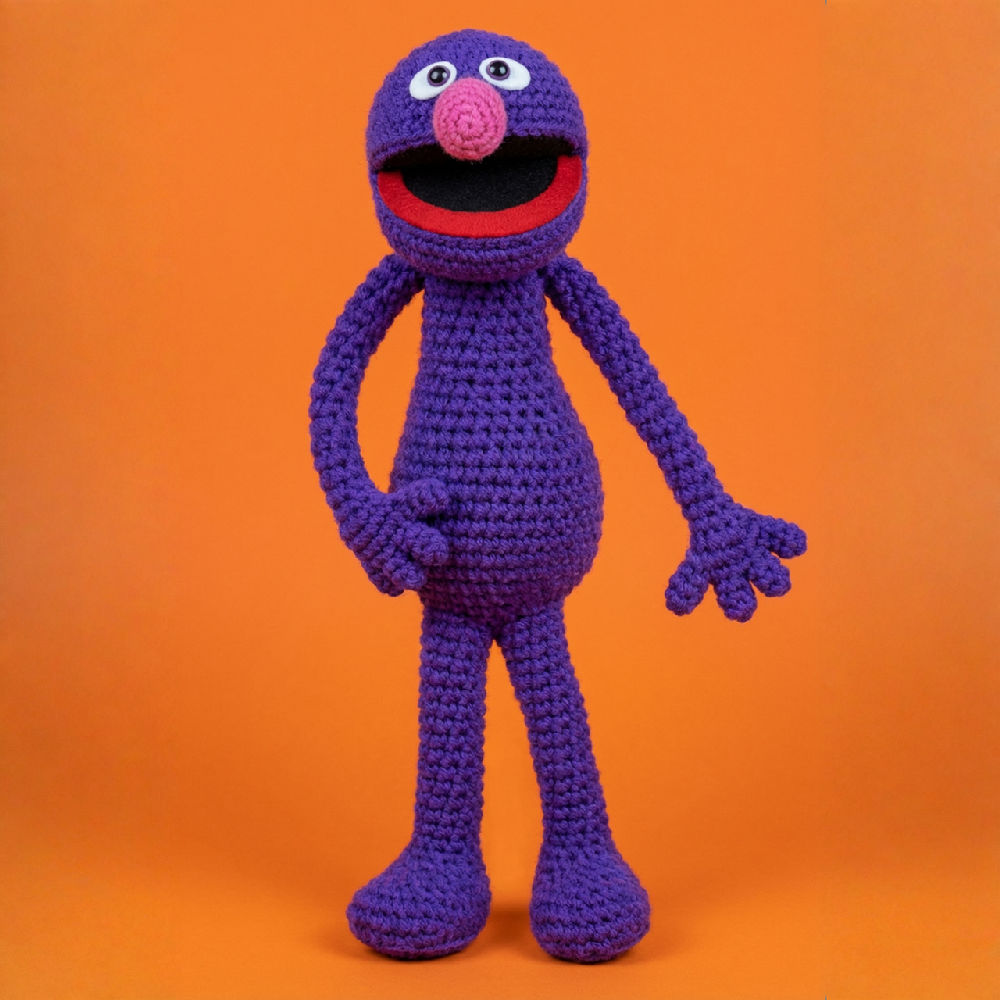

Manual Restaurado y Traducido — Para Sarah
COLORES – PUNTOS:
WHITE (Blanco) – A – SINGLE (Punto recto corto)
BLACK (Negro) – B – SATIN (Punto plano/relleno)
⚠️ Puede requerirse ajuste según cuánto relleno hayas puesto.
Detalle en los pies: Con lana BLANCA fina, coser 2 puntadas rectas de ½ pulgada (≈1.3 cm), separadas ¼ pulgada (0.6 cm) en la parte superior del pie.
Usa este esquema para calcar y colocar con precisión los ojos, la nariz y la boca.
A ≈1" del final de la lana, haz un nudo corredizo. Sujeta el ganchillo como un lápiz. Pasa la lana por los dedos de la mano izquierda: sobre el anular, bajo el corazón, sobre el índice. (Ver Diag. 1–3).
Inserta el ganchillo bajo los 2 hilos superiores. Toma hebra y saca bucle (2 bucles en gancho). Toma hebra y pásala por los 2 bucles. (Ver Diag. 4–7).
Toma hebra (YO) e inserta ganchillo → 3 bucles. Toma hebra, pasa por 2 → 2 quedan. Toma hebra, pasa por los 2 restantes. (Ver Diag. 8–12).
Como el punto alto hasta 3 bucles en gancho. Toma hebra y pásala por los tres bucles a la vez. (Ver Diag. 13–16).
Inserta ganchillo, toma hebra y pásala por el punto y el bucle del ganchillo en un solo movimiento. (Ver Diag. 17–18).
ch = cadenetasc = punto bajodc = punto altohdc = medio punto altosl st = punto rasost / sts = punto(s)rnd = vuelta / rondabeg = comienzoinc = aumentodec = disminuciónrep = repetirlp = bucleyo = hebra sobre ganchosk = saltar puntoSi tienes demasiados puntos por pulgada → tejes muy apretado, usa aguja más grande.
Si tienes pocos puntos → tejes muy flojo, usa aguja más pequeña.
El kit incluye lana suficiente solo si se respeta la tensión correcta.
Rnd 1: 2 ch, 6 sc en la 2ª cad desde el ganchillo. → 6 puntos en círculo. (6 sts)
Rnd 2: Aumento en cada punto. → 2 sc en cada uno de los 6 puntos. (12 sts)
Rnd 3: *1 sc, 1 aum*; rep 3 veces. → Alternar 1 normal + 1 aumento. (16 sts)
Rnd 4: *2 sc, 1 aum*; rep 3 veces. (20 sts)
Rnd 5: *3 sc, 1 aum*; rep 3 veces. (24 sts)
Rnd 6: *4 sc, 1 aum*; rep 3 veces. (28 sts)
Rnd 7: *5 sc, 1 aum*; rep 3 veces. (32 sts)
Rnd 8: *6 sc, 1 aum*; rep 3 veces. (36 sts)
Rnd 9: *7 sc, 1 aum*; rep 3 veces. (40 sts)
Rnds 10 & 11: Sc alrededor sin cambios. → 2 vueltas rectas para dar altura. (40 sts)
Rnd 12: *8 sc, 1 dism*; rep 3 veces. → Empiezan las disminuciones. (36 sts)
Rnd 13: *7 sc, 1 dism*; rep 3 veces. (32 sts)
Rnd 14: *6 sc, 1 dism*; rep 3 veces. (28 sts)
Rnd 15: *5 sc, 1 dism*; rep 3 veces. (24 sts)
Rnd 16: *4 sc, 1 dism*; rep 3 veces. (20 sts)
Rnd 17: *3 sc, 1 dism*; rep 3 veces. (16 sts)
Rnd 18: *2 sc, 1 dism*; rep 3 veces. → Rellena bien en este punto. (12 sts)
Rnd 19: *1 sc, 1 dism*; rep 3 veces. → RELLENAR. Cerrar y rematar con hebra larga. (8 sts)
Rnd 1: Con BLACK, 2 ch, 6 sc en la 2ª cad. (6 sts)
Rnd 2: Aumento en cada punto. (12 sts)
Rnd 3: *1 sc, 1 aum*; rep 5 veces. (18 sts)
Rnd 4: *2 sc, 1 aum*; rep 5 veces. (24 sts)
Rnd 5: *3 sc, 1 aum*; rep 5 veces. (30 sts)
Rnd 6: *4 sc, 1 aum*; rep 5 veces. (36 sts)
Rnd 7: *5 sc, 1 aum*; rep 5 veces. (42 sts)
Rnd 8: *6 sc, 1 aum*; rep 5 veces. En el último pto cambiar a RED. (48 sts)
Parte Roja (filas): 4 sc. 1 ch, girar. 1 sc en cada punto. Repetir hasta 12 filas.
Montaje: Dejar hebra roja larga y unir al borde del forro. Doblar a la mitad, coser con BLACK. Insertar en la abertura de la cabeza. Con PURPLE dar puntadas para formar los labios.
Rnd 1: 2 ch, 6 sc en la 2ª cad. (6 sts)
Rnd 2: *1 sc, 2 aum, 1 sc*. → Esto alarga la nariz para darle forma ovalada. (7 sts)
Rnd 3: Sc alrededor sin cambios. (7 sts)
Rnd 4: *2 sc, 1 dism*, 3 sc. → Punto raso y rematar. RELLENAR antes de cerrar. (6 sts)
Con WHITE, 3 ch. Sc en la 2ª cad. 2 sc en la siguiente cad. 1 sc en el lado opuesto. Unir con punto raso y rematar.
Bordar la pupila con BLACK fina usando satin stitch sobre la apertura del ojo.
Rnd 1: 10 ch, unir formando un anillo. 1 ch, sc en cada punto. → Anillo de base, no círculo. (10 sts)
Rnds 2 & 3: Sc alrededor sin cambios. (10 sts)
Rnd 4: *1 sc, 1 aum*; rep una vez más. (12 sts)
Rnd 5: *2 sc, 1 aum*; rep una vez más. (14 sts)
Rnd 6: *3 sc, 1 aum*; rep una vez más. (16 sts)
Rnd 7: *4 sc, 1 aum*; rep una vez más. (18 sts)
Rnd 8: Sc alrededor sin cambios. (18 sts)
Rnd 9: *1 sc, 1 aum*; rep dos veces más. (21 sts)
Rnd 10: Sc alrededor sin cambios. (21 sts)
Rnd 11: *3 sc, 1 aum*; rep dos veces más. (24 sts)
Rnd 12: Sc alrededor sin cambios. (24 sts)
Rnd 13: *5 sc, 1 aum*; rep 3 veces. (28 sts)
Rnd 14: *6 sc, 1 aum*; rep 3 veces. (32 sts)
Rnd 15: Sc alrededor sin cambios. (32 sts)
Rnd 16: *7 sc, 1 aum*; rep 3 veces. → Punto más ancho del cuerpo. (36 sts)
Rnd 17: Sc alrededor sin cambios. (36 sts)
Rnd 18: *5 sc, 1 dism*; rep 3 veces. → El cuerpo se estrecha. (30 sts)
Rnd 19: *4 sc, 1 dism*; rep una vez más. (≈24–26 sts)
Rnd 20: *10 sc, 1 dism*; rep una vez. → RELLENAR (STUFF) aquí. (22 sts)
Rnd 21: *3 sc, 1 dism*; rep 3 veces, 2 sc. (18 sts)
Rnd 22: Punto raso en el 1er sc. 5 ch, saltar 8 puntos, punto raso en el siguiente sc. 1 ch, girar. → ¡Se forman los huecos para las piernas!
Rnd 1: Sc alrededor del hueco. → 13 puntos en cada hueco de pierna. (13 sts)
Rnds 2–5: 1 disminución por vuelta en sitios distintos. → Bajar de 13 a 9 pts progresivamente. (9 sts)
Rnds 6–11: Sc alrededor sin cambios. → Vueltas rectas del muslo. (9 sts)
Rnd 12: Sc + 2 aumentos en el centro frontal. → Empieza el pie. (11 sts)
Rnds 13 & 14: Repetir Rnd 12 (llegar a 13 y 15 sts).
Rnd 15: Sc + 4 aumentos en el centro del pie. (19 sts)
Rnds 16–18: Continuar la misma lógica de Rnd 12 (21, 23, 25 sts).
Rnd 19: Solo bucles traseros (BLO): *1 sc BLO, 1 dism BLO*; rep 5 veces más. → Da un pliegue limpio en el pie. (17 sts)
RELLENAR (STUFF).
Rnd 20: *1 sc, 1 dism*; rep 4 veces, 2 sc. Unir y dejar hebra. → Repetir Rnds 1–20 para la 2ª pierna. Cerrar y coser. (12 sts)
Rnd 1: 7 ch, unir en anillo, sc alrededor. → Anillo alargado base del brazo. (7 sts)
Rnds 2–13: Sc alrededor sin cambios. → 12 vueltas rectas. Rellenar a medida que avanzas. (7 sts)
Rnd 14: *1 sc, 1 aum*, 3 sc. → La mano empieza a ensancharse. (8 sts)
Rnd 15: *1 sc, 1 aum*; rep 3 veces. (12 sts)
Rnd 16: Sc alrededor. → RELLENAR ligeramente la mano. (12 sts)
Rnd 17: Aplanar la pieza y hacer sc a través de ambas capas. → La mano queda plana con 6 pts en el borde. (6 sts)
No tejes alrededor sino que construyes 4 dedos desde el borde plano cerrado (los 6 pts de Rnd 17):
💡 Distribuye los 4 dedos uniformemente en los 6 puntos del borde. El dedo 1 (ch5) va en el centro; los demás (ch3) a los lados.